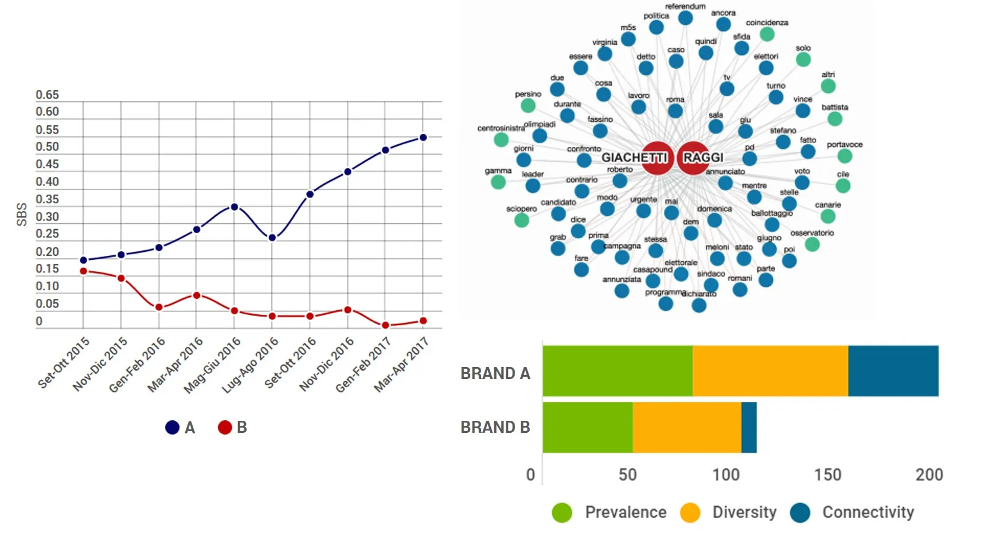
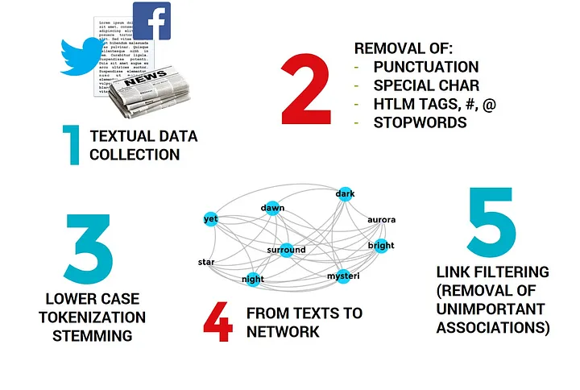
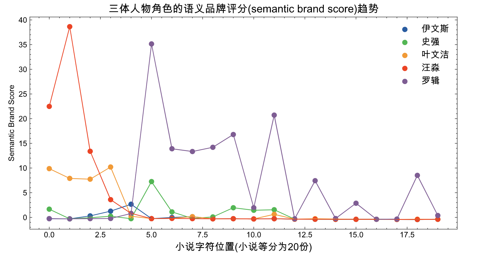
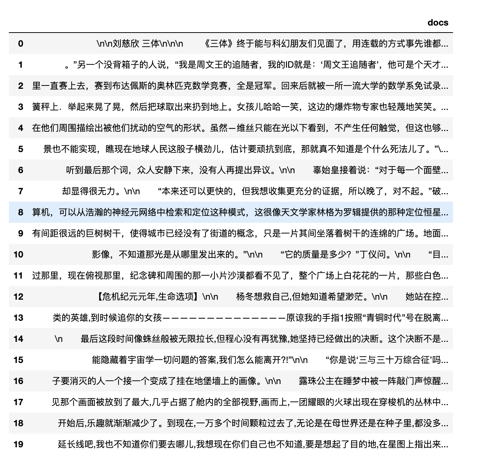
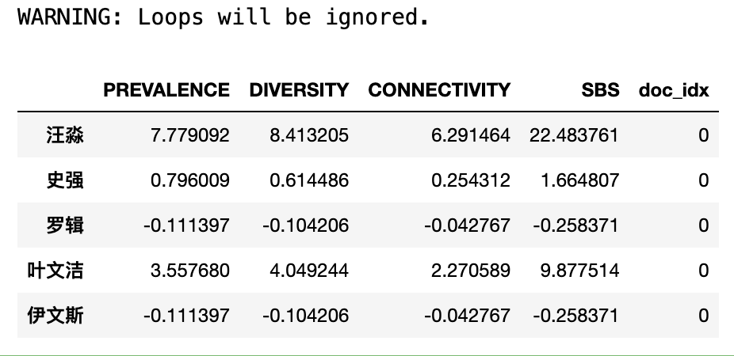
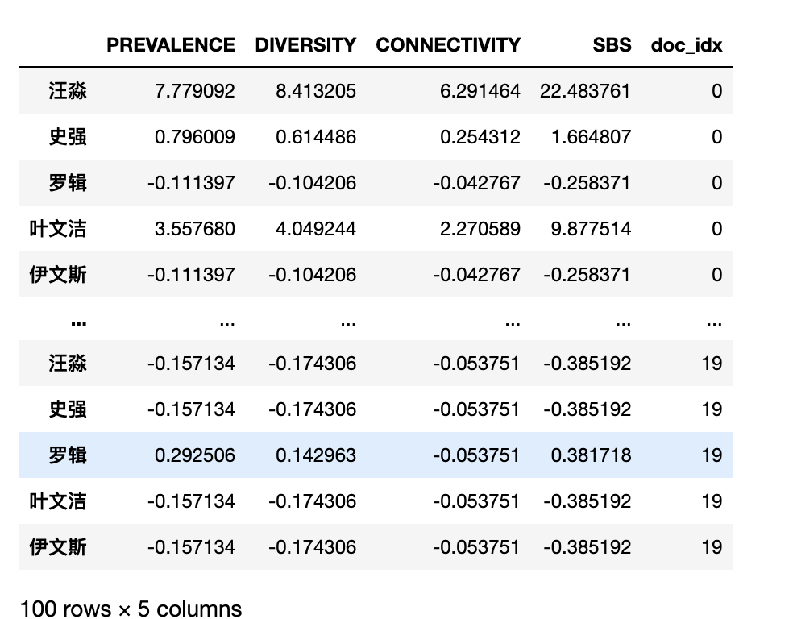
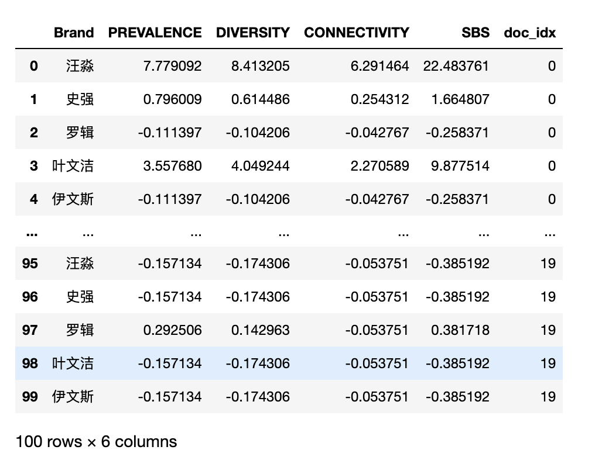

一、语义品牌评分
语义品牌评分(SBS) 是一种新颖的指标，可以通过文本语料，衡量(评估)不同环境下一个或多个品牌的 品牌重要性。
Colladon, Andrea Fronzetti. “The semantic brand score.” Journal of Business Research 88 (2018): 150-160.
相对于一些传统措施的优点是，SBS 不依赖于对小样本消费者进行的调查，可以捕捉到真实可信的信号 。该度量可以对任意来源的文本进行计算， 例如报纸文章、电子邮件、推文、在线论坛、博客和社交媒体上的帖子。 如果研究景点品牌的重要性，可以从消费者或其他品牌利益相关者通常出现的地方（例如旅游论坛）收集他们的发表的信息。这样做的优点是可以减少因使用问卷而引起的偏见，因为受访者知道他们正在被观察。 SBS 还可以适应不同的语言，并研究特定单词或单词集（不一定是“品牌”）的重要性。
通过 “品牌”，人们可以指政治家的名字，或者代表一个概念的一组单词（例如，“创新”的概念或企业核心价值）。该措施用于评估新品牌取代旧品牌时发生的过渡动态。语义品牌评分还可用于将品牌的重要性与其竞争对手的重要性联系起来，或分析单个品牌的重要性时间趋势。在某些应用中，事实证明该分数对于预测目的很有用。例如，人们发现在线媒体中政治候选人的品牌重要性与选举结果之间存在联系，或者景点品牌的重要性与游客数量趋势之间存在联系。

二、品牌重要性的三个维度
SBS 衡量 品牌重要性 ，这是品牌资产的基础(Fronzetti Colladon， 2018)。事实上，该指标的部分灵感来自于众所周知的品牌资产概念以及品牌形象和品牌意识的构建（Keller, 1993）。 品牌重要性通过三个维度来衡量：流行度、多样性 和 连通性。
- 流行度(Prevalence) 衡量品牌名称的使用频率，即直接提及品牌的次数。
- 多样性(Diversity) 衡量与品牌相关的词语的多样性。
- 连接性(Connectivity) 代表品牌在其他单词或单词组（有时被视为话语主题）之间建立联系的能力。
三、文本分析步骤
语义品牌得分(SBS) 的计算需要结合文本挖掘和社交网络分析的方法和工具。下图说明了主要的初步步骤，包括数据收集、文本预处理和单词共现网络的构建。

1. 准备文本数据
2. 文本预处理(剔除标点符号、剔除特殊字符、剔除html标签、剔除#@等符号、剔除停用词)
3. 英文小写、分词、合并同类项(类似于is、was、are都合并到be)
4. 从文本信息中构建共现语义网络(确定词语上下文范围，涉及到co-range， 默认co-range=7)
5. 剔除贡献语义网络中不重要的边(联系， 涉及到参数link_filter， 默认link_filter=2))
四、实验
以三体为例，分析小说中5个角色的语义品牌评分（类比于文本中分析品牌的重要性） 。我们将小说等分为20分，希望得到角色语义品牌评分随着小说进度的变化趋势。

4.1 读取数据
三体小说2.5M
import pandas as pd
def read_txt(file, num_segments, encoding='utf-8'):
# 读取txt文件
with open(file, "r", encoding=encoding) as f:
text = f.read()
# 获取文本的总长度和每一段的长度
total_length = len(text)
segment_length = total_length // num_segments
# 将文本分割成指定数量的段落
segments = []
for i in range(num_segments):
start = i * segment_length
end = (i + 1) * segment_length
if i == num_segments - 1:
end = total_length
segment = text[start:end]
segments.append(segment)
# 将内容存储在数据框中
df = pd.DataFrame(segments, columns=["docs"])
return df
#分成20份
df = read_txt(file='三体全集.txt', num_segments=20)
df

4.2 计算SBS
语义品牌评分SBS已经封装到 cntext2.1.1 中， 文末有 cntext-2.1.1-py3-none-any.whl 获取方式 。
4.2.1 安装cntext2.1.1
将 cntext-2.1.1-py3-none-any.whl 放置于桌面，打开 cmd (苹果电脑打开terminal)， 输入 cd desktop
cd desktop
之后在 cmd (苹果电脑打开terminal) 中使用 pip3 安装
pip3 install distinctiveness
pip3 install cntext-2.1.1-py3-none-any.whl
4.2.2 开始计算
2.7M 的三体小说文本，全部运行下来大概 10-20min ，可见SBS计算非常慢， 所以为了省时间，我们先以三体小说第一份（等分20份中的第一份）做个小实验。
import cntext as ct
brands = ['汪淼', '史强', '罗辑', '叶文洁', '伊文斯']
#小说第一份文本（等分20份中的第一份）
text = df['docs'].values[0]
#如果不用三体， 只想分析某个txt，以data.txt为例
#text = open('data.txt').read()
sbs_df0 = ct.semantic_brand_score(text=text,
brands=brands,
lang='chinese')
sbs_df0['doc_idx'] = 0
sbs_df0

运行没出现问题， 现在我们对整个小说进行实验，计算五个角色的 SBS 随时间变化。
%%time #记录时间
import cntext as ct
brands = ['汪淼', '史强', '罗辑', '叶文洁', '伊文斯']
sbs_dfs = []
for idx, text in enumerate(df['docs'].values):
print(idx)
sbs_df = ct.semantic_brand_score(text=text,
brands=brands,
lang='chinese')
sbs_df['doc_idx'] = idx
sbs_dfs.append(sbs_df)
SBS_DFs = pd.concat(sbs_dfs)
SBS_DFs
Run
0
WARNING: Loops will be ignored.
1
WARNING: Loops will be ignored.
2
WARNING: Loops will be ignored.
3
WARNING: Loops will be ignored.
4
WARNING: Loops will be ignored.
5
WARNING: Loops will be ignored.
6
WARNING: Loops will be ignored.
7
WARNING: Loops will be ignored.
8
WARNING: Loops will be ignored.
9
WARNING: Loops will be ignored.
10
WARNING: Loops will be ignored.
11
WARNING: Loops will be ignored.
12
WARNING: Loops will be ignored.
13
WARNING: Loops will be ignored.
14
WARNING: Loops will be ignored.
15
WARNING: Loops will be ignored.
16
WARNING: Loops will be ignored.
17
WARNING: Loops will be ignored.
18
WARNING: Loops will be ignored.
19
WARNING: Loops will be ignored.
CPU times: user 10min 9s, sys: 8.53 s, total: 10min 17s
Wall time: 10min 19s

4.3 可视化SBS
可视化三体小说五个角色重要性（语义品牌评分， SBS）随时间 (文本字符位置) 变化趋势
SBS_DFs.reset_index(inplace=True)
SBS_DFs.rename(columns={'index': 'Brand'}, inplace=True)
SBS_DFs

import matplotlib.pyplot as plt
import matplotlib
import matplotlib_inline
matplotlib_inline.backend_inline.set_matplotlib_formats('png', 'svg')
import scienceplots
import platform
plt.style.use(['science', 'no-latex', 'cjk-sc-font'])
system = platform.system() # 获取操作系统类型
if system == 'Windows':
font = {'family': 'SimHei'}
elif system == 'Darwin':
font = {'family': 'Arial Unicode MS'}
else:
font = {'family': 'sans-serif'}
matplotlib.rc('font', **font) # 设置全局字体
plt.figure(figsize=(10, 5))
for brand, brand_df in SBS_DFs.groupby('Brand'):
plt.scatter(brand_df.doc_idx, brand_df.SBS, label=brand)
plt.plot(brand_df.doc_idx, brand_df.SBS)
plt.title('三体人物角色的语义品牌评分(semantic brand score)趋势', fontsize=14, color='black', ha='center')
plt.xlabel('小说字符位置(小说等分为20份)', fontsize=13)
plt.ylabel('Semantic Brand Score')
plt.legend(loc='upper right', fontsize=12)
plt.show()
五、 获取资源
内容整理不易， 如果对本文感兴趣
- 免费 获取本文代码&实验数据 链接: https://pan.baidu.com/s/1ut8bKDxd5PGL_dm_yXTzcA?pwd=tr3t 提取码: tr3t
- 100元 cntext-2.1.1-py3-none-any.whl ，可加微信 372335839， 备注「姓名-学校-专业」
相关资料
Colladon, Andrea Fronzetti. “The semantic brand score.” Journal of Business Research 88 (2018): 150-160.
SBS相关文章列表 https://semanticbrandscore.com/sbsarticles.html